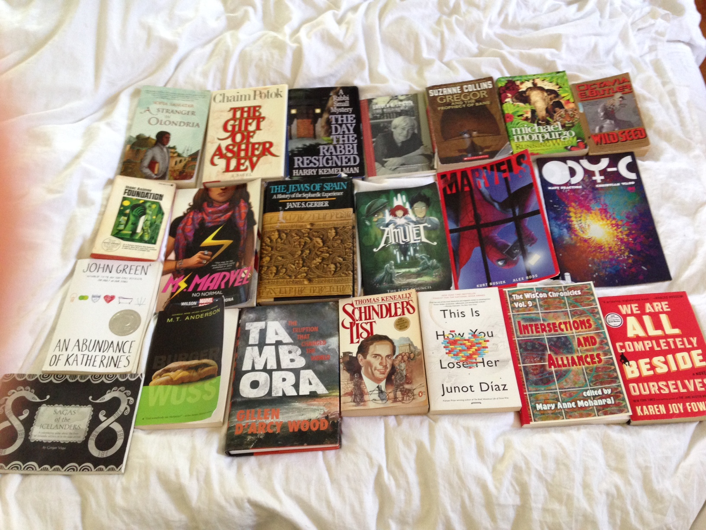

|
|
Completions
I feel like maybe I should return to the original mode of this online journal (which, you will perhaps indulge me the vanity of pointing out, predates the popularization of the term "blog"): chatty, rough hodgepodge and higgledy-piggeldy, part note to self, part public musing, part kvetch, part brag.
As to the latter, here are some things I've finished:
- The pretty-much-final submission draft of The Unraveling, the novel I've been working on in one form or another since 2007.
- A freeform karaoke-based roleplaying game entitled Sing Your Heart Out. This game was written for Aviva. Noah will play almost any tabletop rpg and has written his own (we both entered Game Chef last year); Aviva is a harder sell. My theory is that karaoke will be the ingredient she can't refuse.
- And here are some books I've just finished reading (or re-reading) recently. My Kindle broke, and in the interregnum before the new one arrived I was reading exclusively physical books for a bit; and since I always feel like I should be documenting what books I read (in Goodreads, in a moleskine book journal, something) but never do, I figured I would take the opportunity to capture them. By and large they were pretty great.

That's all I got.
Posted by benrosen at July 5, 2015 10:46 PM | Up to blogComments